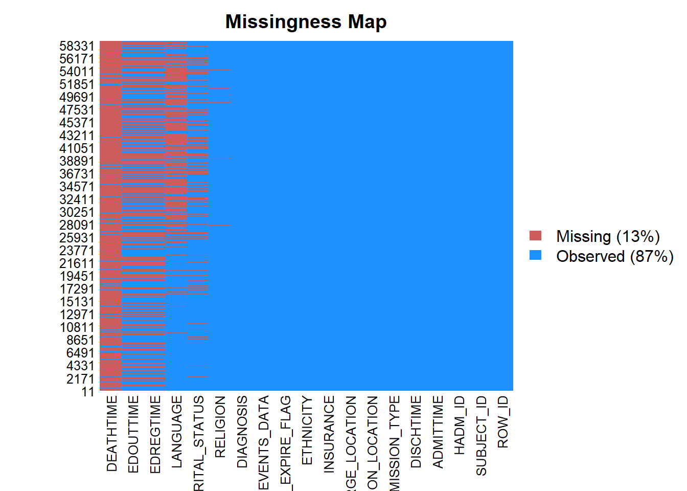
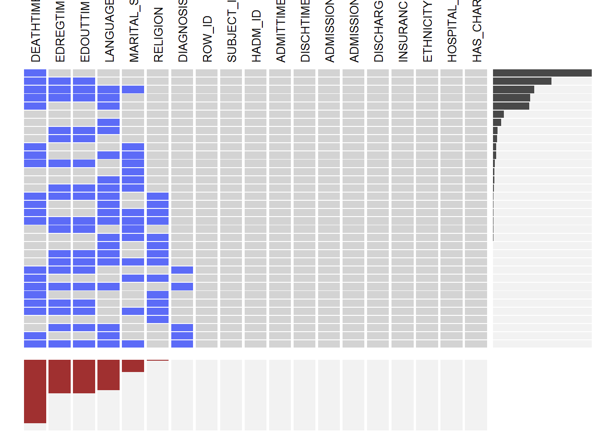
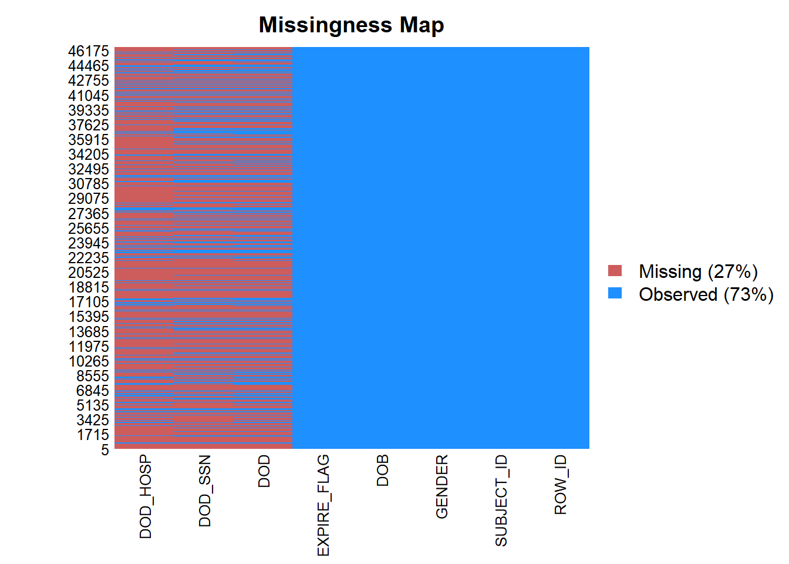
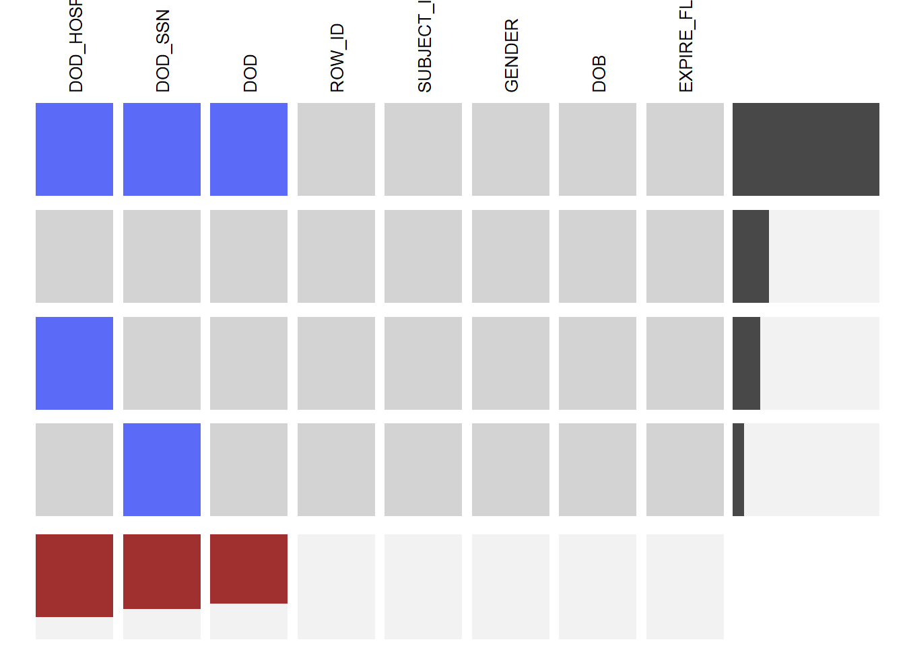
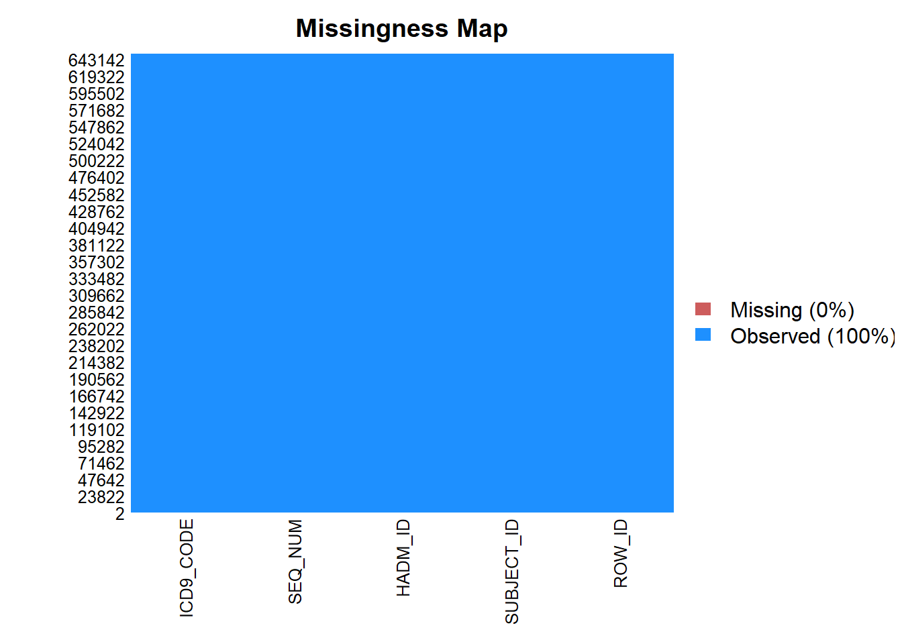
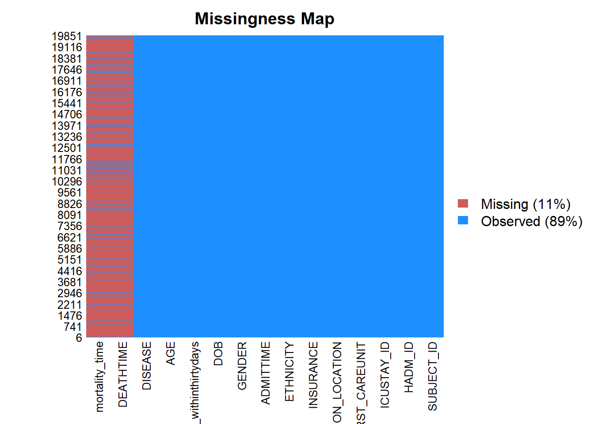
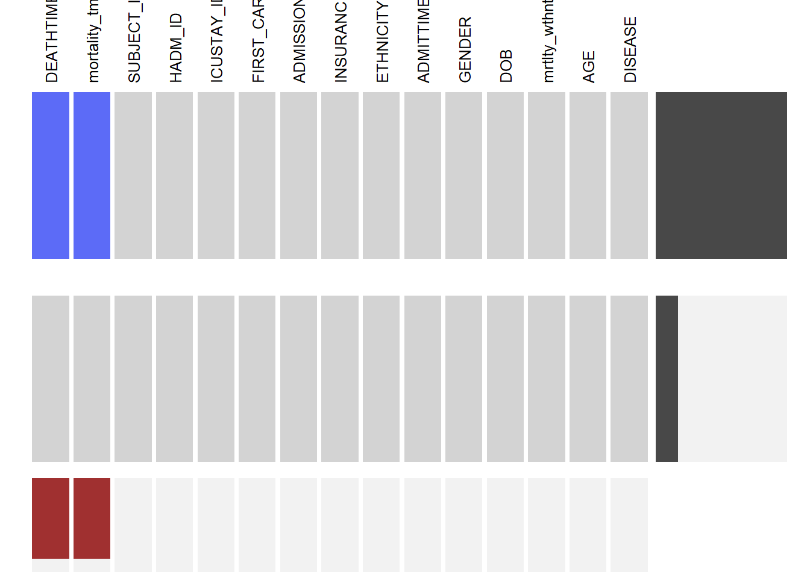

Chapter 5 Missing values
Yaotian Dai
admissions<-read.csv('C:/Users/pudon/Desktop/class/data visualization/final_project/MIMICIII_visualization/data/ADMISSIONS.csv')
patients<-read.csv("C:/Users/pudon/Desktop/class/data visualization/final_project/MIMICIII_visualization/data/PATIENTS.csv")
icu_stay <- read.csv("C:/Users/pudon/Desktop/class/data visualization/final_project/MIMICIII_visualization/data/ICUSTAYS.csv")
ICD<-read.csv("C:/Users/pudon/Desktop/class/data visualization/final_project/MIMICIII_visualization/data/DIAGNOSES_ICD.csv")## ROW_ID SUBJECT_ID HADM_ID
## 0 0 0
## ADMITTIME DISCHTIME DEATHTIME
## 0 0 53122
## ADMISSION_TYPE ADMISSION_LOCATION DISCHARGE_LOCATION
## 0 0 0
## INSURANCE LANGUAGE RELIGION
## 0 25332 458
## MARITAL_STATUS ETHNICITY EDREGTIME
## 10128 0 28099
## EDOUTTIME DIAGNOSIS HOSPITAL_EXPIRE_FLAG
## 28099 25 0
## HAS_CHARTEVENTS_DATA
## 0
 EDREGTIME, EDOUTTIME are time that the patient was registered and discharged from the emergency department. Basically, we are not interested in these columns, so they don’t have influence on our project.
## ROW_ID SUBJECT_ID GENDER DOB DOD DOD_HOSP
## 0 0 0 0 30761 36546
## DOD_SSN EXPIRE_FLAG
## 33142 0
 DOD is the date of death for the given patient. DOD_HOSP is the date of death as recorded in the hospital database. DOD_SSN is the date of death from the social security database. Is a patient do not die, then we don’t have data in these columns.
## ROW_ID SUBJECT_ID HADM_ID ICUSTAY_ID DBSOURCE
## 0 0 0 0 0
## FIRST_CAREUNIT LAST_CAREUNIT FIRST_WARDID LAST_WARDID INTIME
## 0 0 0 0 0
## OUTTIME LOS
## 10 10
## ROW_ID SUBJECT_ID HADM_ID SEQ_NUM ICD9_CODE
## 0 0 0 47 47
## SUBJECT_ID HADM_ID
## 0 0
## ICUSTAY_ID FIRST_CAREUNIT
## 0 0
## ADMISSION_LOCATION INSURANCE
## 0 0
## ETHNICITY ADMITTIME
## 0 0
## DEATHTIME GENDER
## 16997 0
## DOB mortality_time
## 0 16997
## mortality_withinthirtydays AGE
## 0 0
## DISEASE
## 0
 We can see that all the missing data are in DEATHTIME and mortality_time. This is because not all the patients die and those who are alive don’t have DEATHTIME and mortality_time.